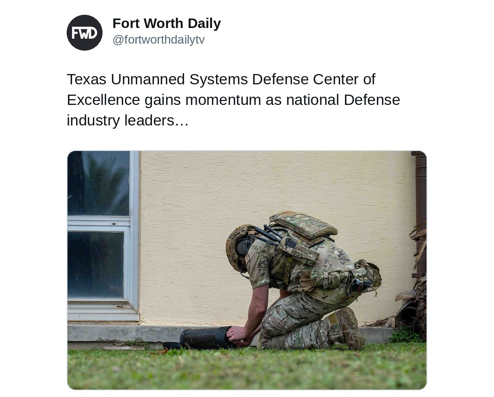
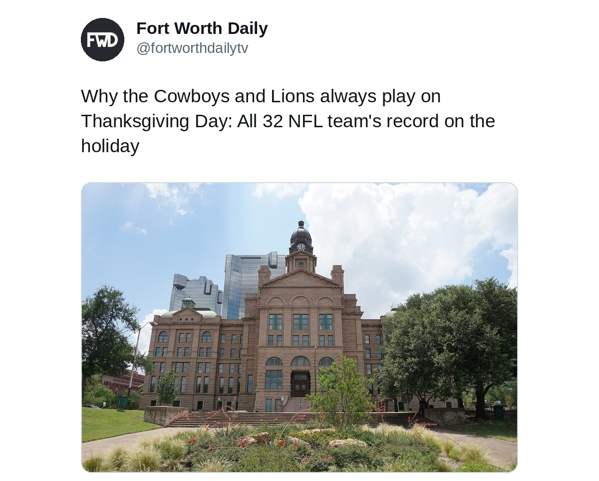

Seven companies commit, while additional companies explore participation in growing defense ecosystem focused on manufacturing, testing, workforce development a Seven companies commit.

👍 ❤️ 😮 ✅ written to disk (dry run)
story + scoring
{
"source": "Fort Worth Business Press",
"kind": "rss",
"score": 0.1226,
"relevance": 0,
"url": "https://fortworthbusiness.com/business/texas-unmanned-systems-defense-center-of-excellence-gains-momentum-as-national-defense-industry-leaders-rally-around-shared-vision/",
"image_license": "wikimedia-cc",
"image_credit": "Photo: U.S. Air Force photo by Senior Airman Catherine Daniel via Wikimedia Commons (Public domain)"
}This year, the Lions will kick off the holiday, hosting the Chicago Bears at Ford Field. The Cowboys will host the Philadelphia Eagles, and the Thanksgiving action will conclude with the Buffalo Bills hosting the Kansas City Chiefs.

👍 ❤️ 😮 ✅ written to disk (dry run)
story + scoring
{
"source": "CBS Sports",
"kind": "rss",
"score": 0.6921,
"relevance": 2,
"url": "https://www.cbssports.com/nfl/news/why-cowboys-lions-always-play-thanksgiving-day-all-32-nfl-teams-record-holiday/",
"image_license": "wikimedia-cc",
"image_credit": "Photo: Michael Barera via Wikimedia Commons (CC BY-SA 4.0)"
}The Texas quarterback can make throws few prospects in the 2027 class can match. Much of that is a function of the world we now live in and, of course, that last name.
It's also not an exaggeration to point out that few (any?) high-profile quarterbacks have been so incredibly divisive.
👍 ❤️ 😮 ✅ written to disk (dry run)
story + scoring
{
"source": "CBS Sports",
"kind": "rss",
"score": 0.5671,
"relevance": 2,
"url": "https://www.cbssports.com/college-football/news/arch-manning-nfl-draft-outlook-if-leaving-texas/",
"image_license": "card",
"image_credit": "Card: FWD"
}